The Carpentries workbench is a set of R packages that provides the infrastructure for all Carpentries lesson materials since 2023. It can be considered as a free, open-source and fully reusable Learning Management System (LMS). The code is available on GitHub under an MIT license and the hosting and automation setup are provided transparently as configuration as code, and for free via GitHub Pages and GitHub Actions. This makes the workbench a prime candidate for any external community that wishes to use a well-tested, free and replicable LMS. In this dashboard, I investigate the use of the workbench in external communities, beyond the Carpentries. This dashboard thus targets multiple audiences and serves multiple purposes:
- Strengthen the case for the further funding of the workbench as a critical piece of technical infrastructure, not just for the Carpentries, but also for adjacent external communities
- Potentially inform the future development of the workbench by highlighting our struggles as an external community adopting this framework, and by analyzing forks of the workbench packages
- Demonstrate to external communities the steps they can follow to use the workbench for their own training materials, including how to define and implement a custom theme.
Number of repositories
491
Number of owners
201
Rmd vs md template
66%
Dependencies update bot
36%
Custom varnish fork
61
Custom sandpaper fork
18
Custom pegboard fork
1
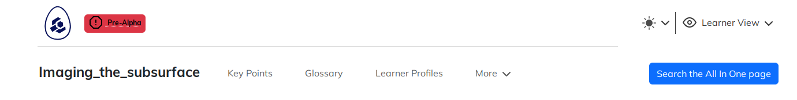 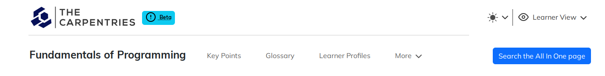 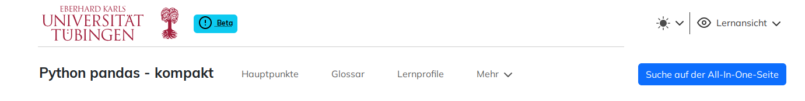 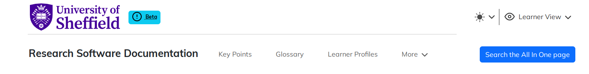 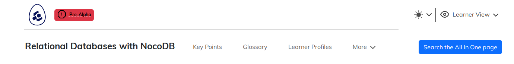 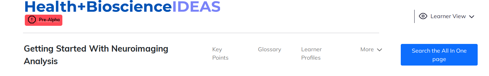 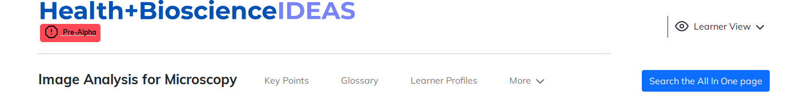 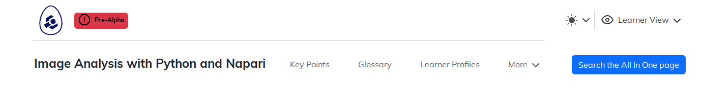 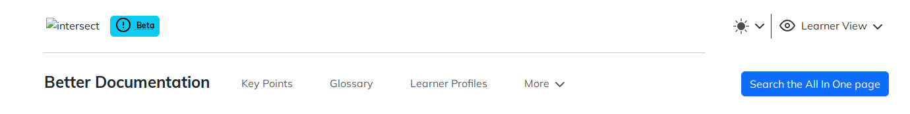 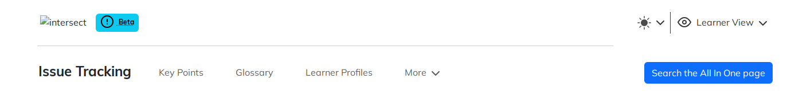 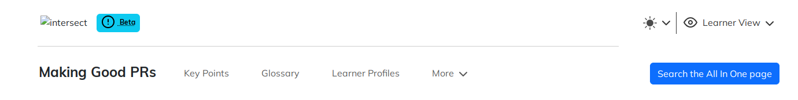  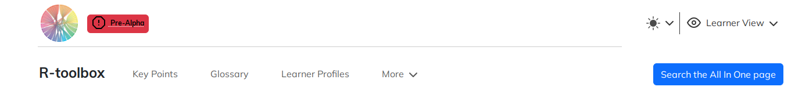
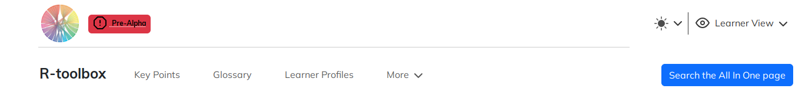  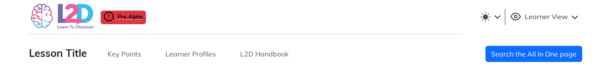 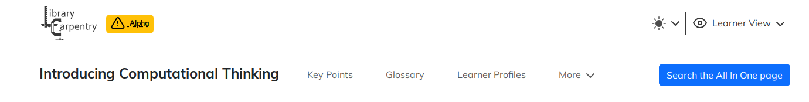 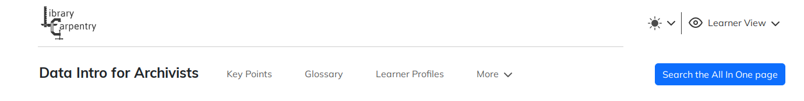 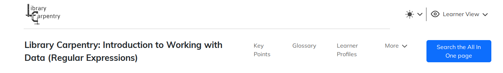 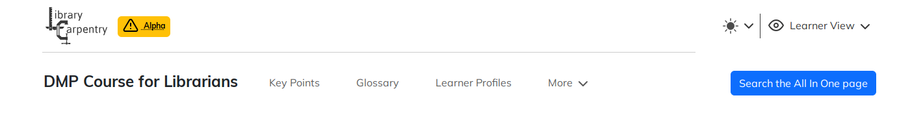 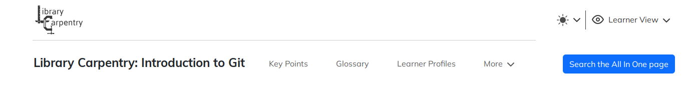 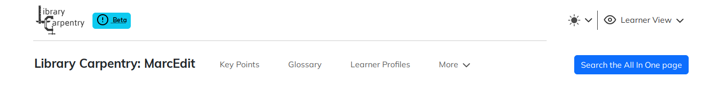 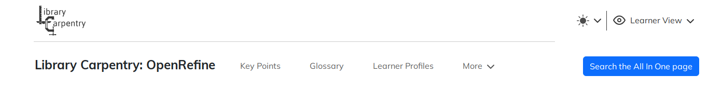 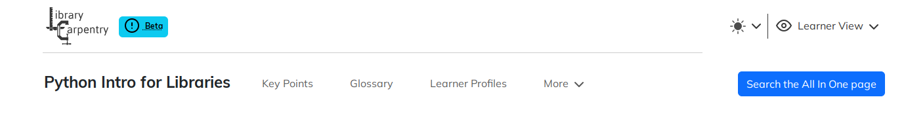 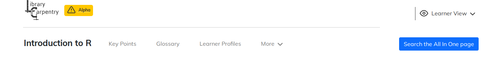 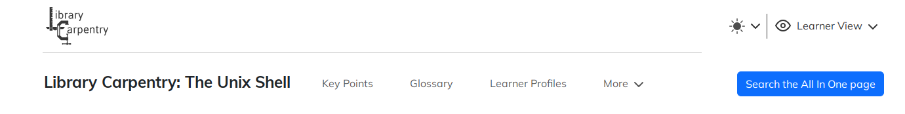 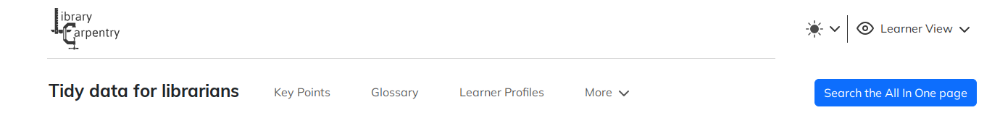 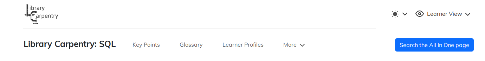 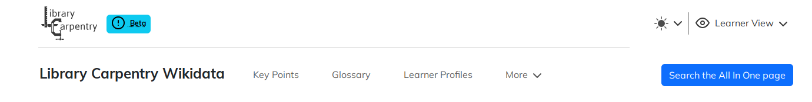 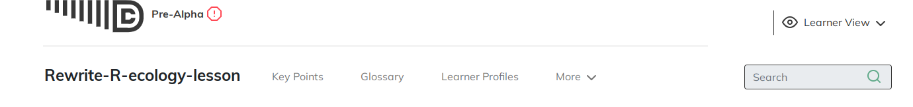 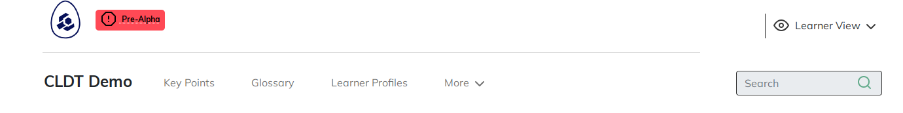
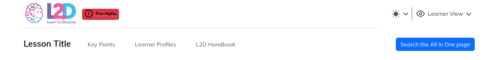 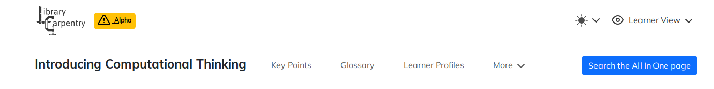 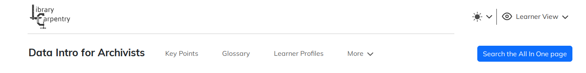 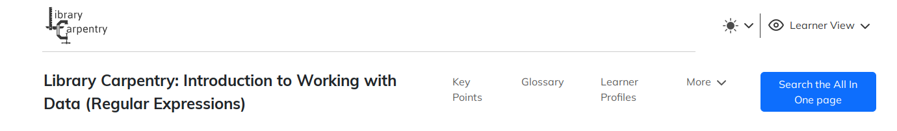 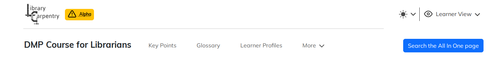 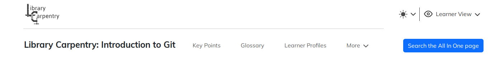 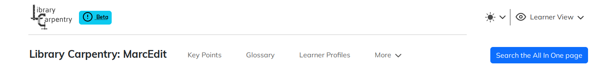 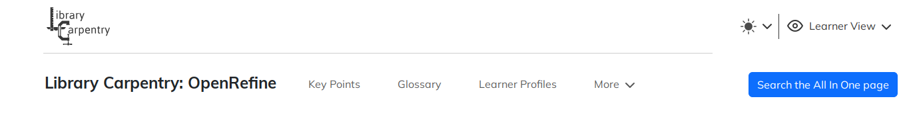 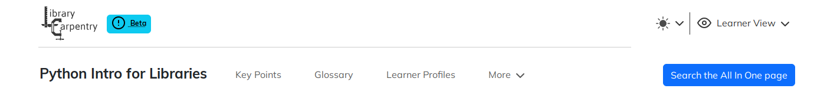 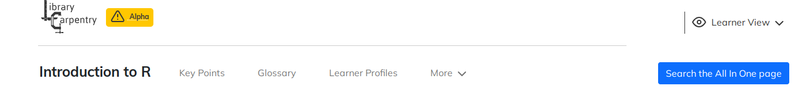 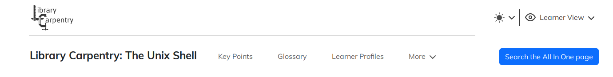 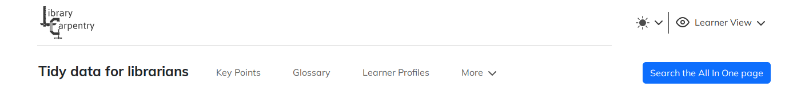 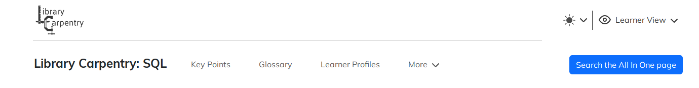 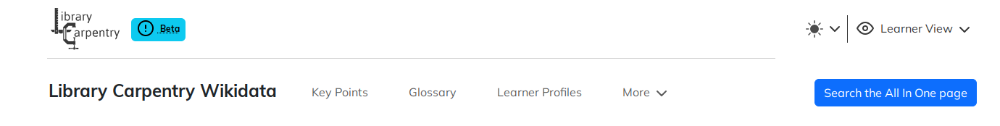 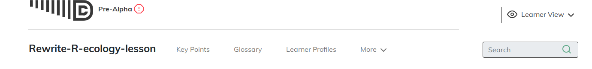 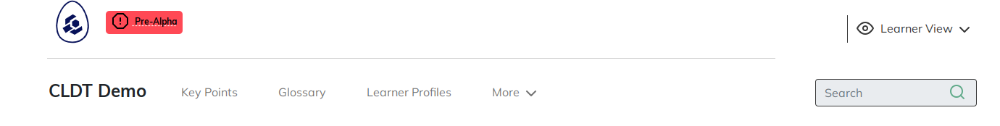  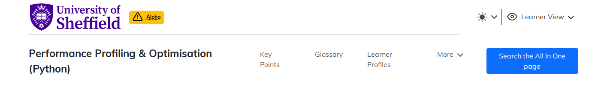 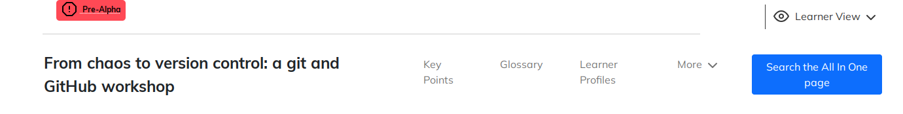 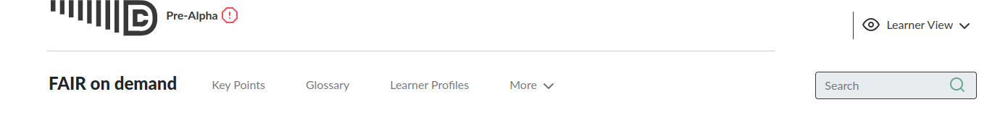 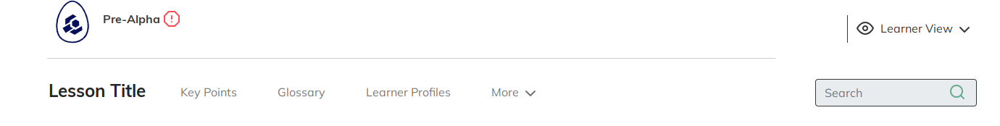 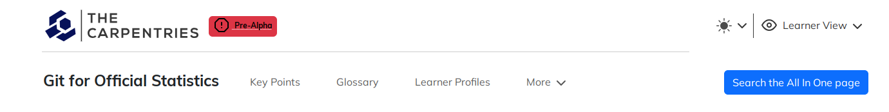       
            
     
     


Repositories that use the workbench are identified by the presence of a sandpaper-main.yaml or sandpaper-version.txt file in the .github/workflows directory.
In each repository using the workbench, the config.yaml file is parsed to extract the following information:
keywords: used to generate the wordcloudlifecyclelanglicense: ignored in the analysis as at the time of writing, all repositories use the same license: CC-BY 4.0- use of a custom sandpaper, varnish or pegboard fork or branch
- To determine is the repository uses Rmd (vs md) files, we check if the
renv.lockfile is present in therenv/profiles/lesson-requirementsdirectory. - To determine if the repository uses the dependencies update bot, we check it has any pull request with the title containing the string
Update n packagesorUpdate Workflows. - The sandpaper version is recorded in the
.github/workflows/sandpaper-version.txtfile.
The analysis was done using the R Statistical language (v4.5.0; R Core Team, 2025) on Ubuntu 24.04.2 LTS, using the packages lubridate (v1.9.4), ggwordcloud (v0.6.2), tibble (v3.2.1), ggplot2 (v3.5.2), forcats (v1.0.0), stringr (v1.5.1), tidyverse (v2.0.0), dplyr (v1.1.4), purrr (v1.0.4), readr (v2.1.5) and tidyr (v1.3.1).
Citations
- Grolemund G, Wickham H (2011). “Dates and Times Made Easy with lubridate.” Journal of Statistical Software, 40(3), 1-25. https://www.jstatsoft.org/v40/i03/.
- Le Pennec E, Slowikowski K (2024). ggwordcloud: A Word Cloud Geom for ‘ggplot2’. R package version 0.6.2, https://github.com/lepennec/ggwordcloud.
- Müller K, Wickham H (2023). tibble: Simple Data Frames. R package version 3.2.1, https://tibble.tidyverse.org/.
- R Core Team (2025). R: A Language and Environment for Statistical Computing. R Foundation for Statistical Computing, Vienna, Austria. https://www.R-project.org/.
- Wickham H (2016). ggplot2: Elegant Graphics for Data Analysis. Springer-Verlag New York. ISBN 978-3-319-24277-4, https://ggplot2.tidyverse.org.
- Wickham H (2023). forcats: Tools for Working with Categorical Variables (Factors). R package version 1.0.0, https://forcats.tidyverse.org/.
- Wickham H (2023). stringr: Simple, Consistent Wrappers for Common String Operations. R package version 1.5.1, https://stringr.tidyverse.org.
- Wickham H, Averick M, Bryan J, Chang W, McGowan LD, François R, Grolemund G, Hayes A, Henry L, Hester J, Kuhn M, Pedersen TL, Miller E, Bache SM, Müller K, Ooms J, Robinson D, Seidel DP, Spinu V, Takahashi K, Vaughan D, Wilke C, Woo K, Yutani H (2019). “Welcome to the tidyverse.” Journal of Open Source Software, 4(43), 1686. doi:10.21105/joss.01686 https://doi.org/10.21105/joss.01686.
- Wickham H, François R, Henry L, Müller K, Vaughan D (2023). dplyr: A Grammar of Data Manipulation. R package version 1.1.4, https://dplyr.tidyverse.org.
- Wickham H, Henry L (2025). purrr: Functional Programming Tools. R package version 1.0.4, https://purrr.tidyverse.org/.
- Wickham H, Hester J, Bryan J (2024). readr: Read Rectangular Text Data. R package version 2.1.5, https://readr.tidyverse.org.
- Wickham H, Vaughan D, Girlich M (2024). tidyr: Tidy Messy Data. R package version 1.3.1, https://tidyr.tidyverse.org.